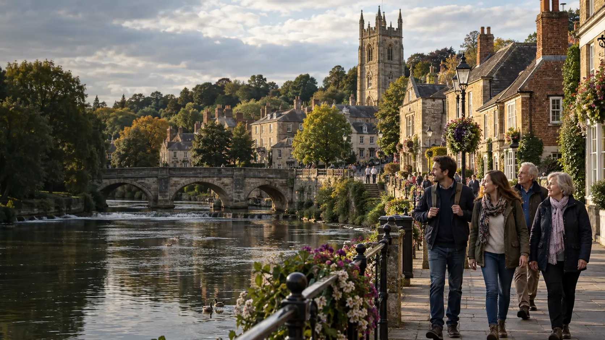

Your destination website
Listings, search, maps, saved places and trip inspiration, presented in your destination’s brand.
Made for destinations.
A website visitors love. A CRM your team relies on. Reporting that brings it all into focus.
Bring your destination website, membership, content and day-to-day work together in one connected platform.
For destination teams. From local places to global ambitions.

The whole destination picture
VisitMade connects the experience you give visitors with the work that makes it happen. Promote your places, support your partners and keep your team moving—all from one platform.
Inspire the next visit
Give visitors a useful, inspiring way to discover your destination. Bring places to stay, things to do, food, events and trip ideas together in a website that feels like you.
Help visitors find more reasons to explore.
Behind every great destination
Keep the people, businesses and next actions that matter in one workspace. Follow a prospect through your pipeline, manage membership and keep their visitor listing connected.
Contacts, benefits, listings and next actions.
Make the picture clearer
Bring membership, income, pipeline and visitor-economy figures into a dashboard you can arrange around your role. Review social performance and the visitor themes recorded across your listings.
Visitor-economy and social figures use supplied data or configured providers; they are not automatically collected from every channel.
See reporting in the CRM demo (opens in a new tab)A dashboard shaped around your priorities.
Connected by design
Move from managing a relationship to publishing a visitor listing without starting again. Keep your membership work and destination content connected.
See both sides of VisitMadeKeep contacts, conversations and next actions with the business.
Track their level, benefits, renewal and payment status.
Edit and publish their listing through the same workspace.
One complete package
From a small tourism team to a wider destination partnership, bring your public presence and everyday operations under one roof.
Listings, search, maps, saved places and trip inspiration, presented in your destination’s brand.
Businesses, contacts, pipeline, membership levels and benefits, with clear next actions.
Manage listings, guides, itineraries and trails. Review organiser submissions before events go live.
Keep invoices, payment status, renewals and agreement progress alongside your member records.
Bring your membership, visitor-economy and supplied social figures into a clearer picture.
Shared tasks, website enquiries, user roles and configurable modules for the way your team works.
External services—including accounting, banking, email and AI—are configured separately and may carry provider charges.
Take a look around
Explore our fictional destination to see the visitor experience and the workspace behind it. One connected product, shown from both sides.
Browse places, events and trip ideas.
Open destination demo (opens in a new tab)Explore members, content and reporting.
Open CRM demo (opens in a new tab)Visit Valechester is a demonstration destination. Its businesses and figures illustrate the platform; they are not customer results. The CRM demo may ask you to choose a demo account or sign in.
A few useful answers
Both. VisitMade combines a public destination website with the workspace your team uses for businesses, membership, content and reporting. The package brings those activities together.
Yes. Your destination keeps its own identity. The visitor website is configured around your brand, places and content, while VisitMade provides the platform behind it.
No. VisitMade is for destination teams with local knowledge and worldwide ambitions, including destinations in the US. Content, terminology and operational requirements are scoped around your destination.
Yes. The CRM supports configurable membership levels, associated benefits and benefit-usage tracking, so the system can reflect your membership offer.
Membership, pipeline and billing summaries come from records in the workspace. Visitor-economy and social reporting use figures you supply or configured data providers. Review themes are drawn from evidence recorded against listings.
Your brand, content, membership structure, team access and shared data environment are set up for your destination. Live email and third-party services require the relevant accounts and configuration. We scope those requirements before launch.